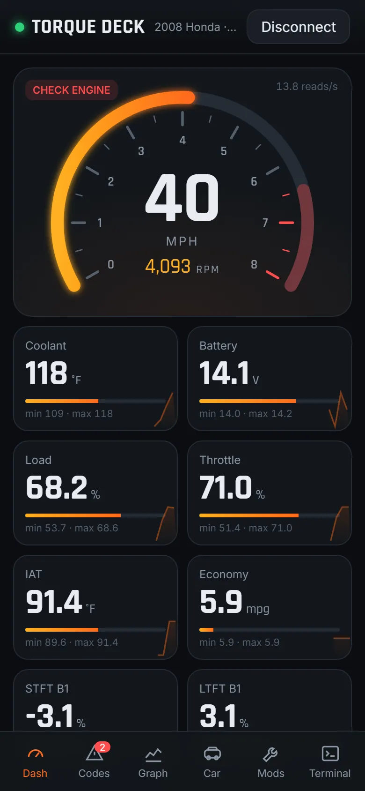
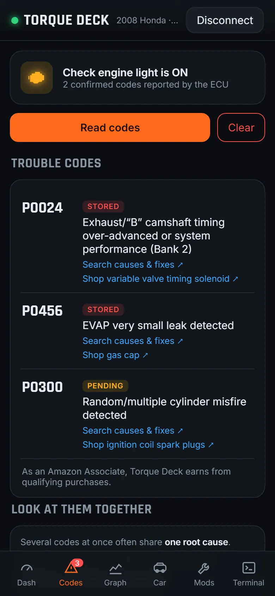
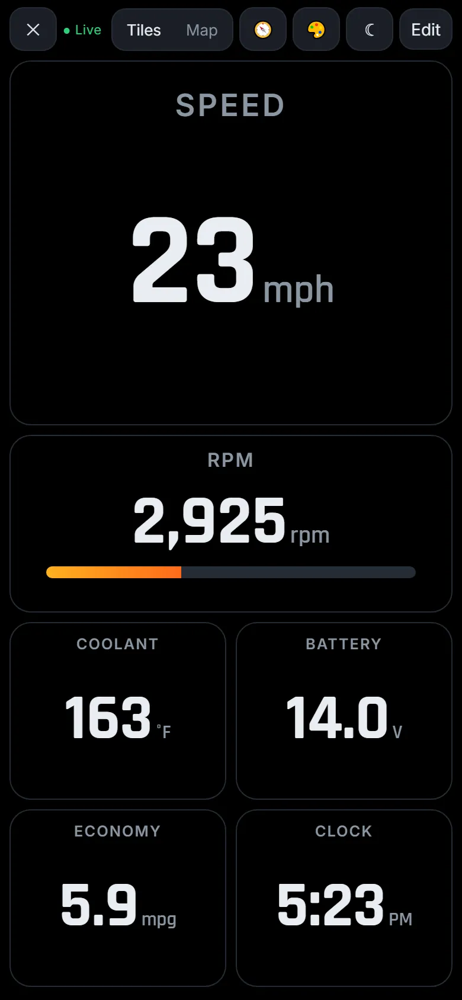
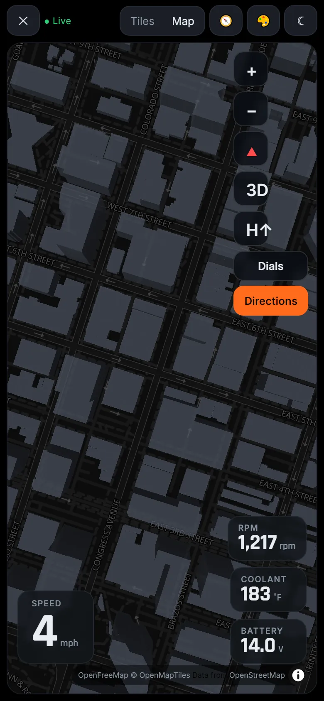
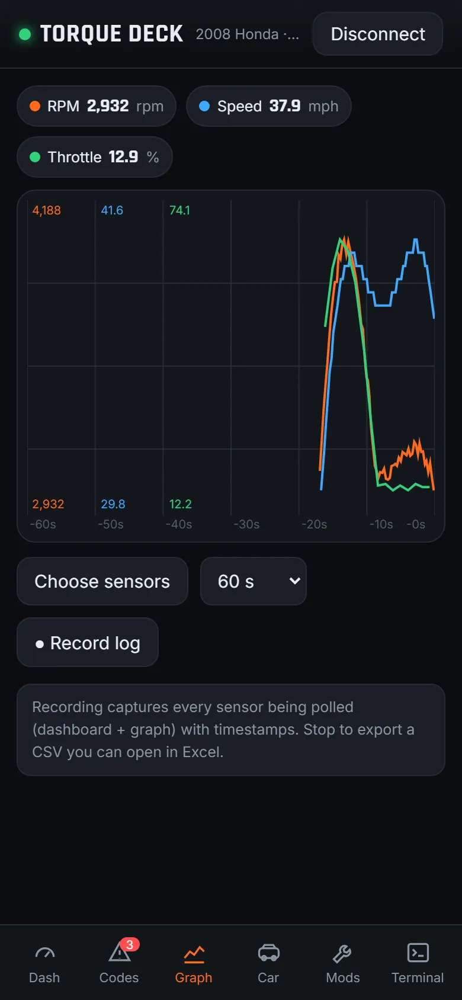
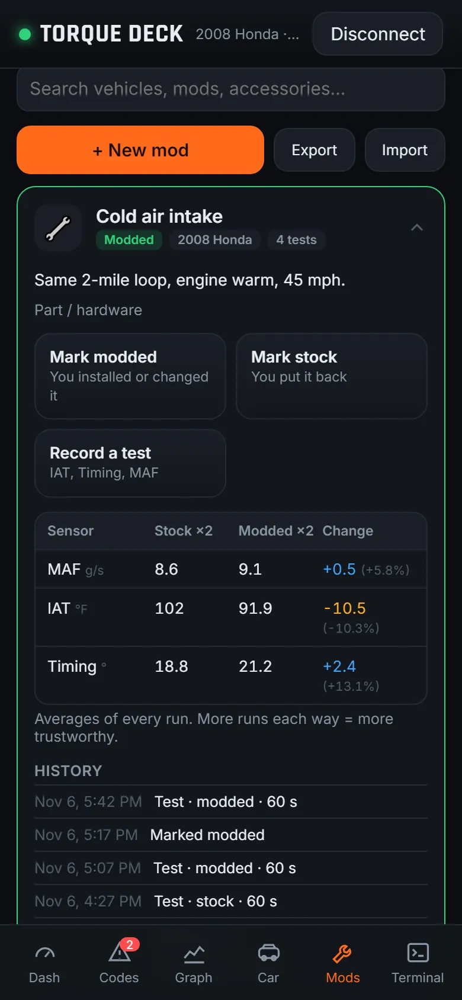

Plug a cheap Bluetooth OBD2 adapter into your car. Torque Deck reads check engine codes, shows live engine data, graphs sensors and turns your phone into a big driving dashboard. No app store, no account, no ads.
Works in Chrome on Android, Windows, Mac and ChromeOS, and in Bluefy on iPhone.





Without a subscription, and without handing your data to anyone. See the full list: 38 sensors, 57 commands, 17 tools →
Stored, pending and permanent codes in plain English, freeze frame data, and a safe clear with a confirmation.
Up to 3 sensors on one graph, from 30 seconds to 10 minutes. Record a drive and export it to Excel as CSV.
A full-screen board for a phone mount, portrait or landscape. Big tiles, gauges, presets and a red night mode.
3D map with your engine readings floating on top, follow-the-car camera and free directions.
Emissions readiness monitors with a simple "ready for inspection" answer before you go to the test station.
Checks the battery at rest and the alternator while running, plus a drain watch for parked cars.
Common mods for the best-selling trucks and SUVs, and checks like a GPS speedometer test after a tire change.
No account and no server. Install it to your home screen and it works without signal.
Most scan apps stop at reading codes. Torque Deck keeps each change you make as a card for your car: apply it, undo it, record a timed test each way, and compare stock against modded in a table.

About two minutes from opening the box to live data.
The OBD2 port is under the dashboard, near your knees on the driver's side.
Key on or engine running. Classic Bluetooth adapters get paired in phone settings first (PIN 1234 or 0000).
Pick your adapter from the list. Next time, it reconnects for you.
Any Bluetooth LE ELM327 adapter works on every phone. Classic Bluetooth adapters work on Android and computers. These are good picks.
Small, fast Bluetooth LE adapter. Works on Android, computers and iPhone (in the Bluefy browser). Made for BMW/Mini coding, reads any 1996+ car.
View on Amazon ↗Professional-grade adapter with extra Ford, GM, Toyota and Honda data. Works on Android (Chrome 138+) and Windows. Not on iPhone with Torque Deck.
View on Amazon ↗Budget Bluetooth LE adapter. Works on Android, computers and iPhone (Bluefy).
Search on Amazon ↗Budget Bluetooth LE adapter with a power switch, so it can stay plugged in.
Search on Amazon ↗| Adapter type | Android (Chrome) | Computer (Chrome/Edge) | iPhone |
|---|---|---|---|
| Bluetooth LE | ✅ | ✅ | ✅ in Bluefy |
| Classic Bluetooth | ✅ Chrome 138+ | ✅ | ❌ |
| USB | — | ✅ | ❌ |
Scanners like BlueDriver and FIXD only work with their own apps, not Torque Deck. As an Amazon Associate, Torque Deck earns from qualifying purchases.
What it means, what usually causes it, and whether it's safe to keep driving.
Yes. There is no subscription, no account and no ads. It is open-source under the MIT license. Some links to adapters and parts are Amazon affiliate links, which help keep it free.
A Bluetooth OBD2 adapter (ELM327 type, often about $20) and a phone or computer with Chrome. Plug the adapter into the port under the dashboard, turn the ignition on, open Torque Deck and tap Connect.
Yes, with a Bluetooth LE adapter, in the free Bluefy browser. Apple does not let Safari or Chrome on iPhone use Bluetooth. Classic Bluetooth adapters cannot be used from any iPhone browser.
Any car or light truck with an OBD2 port: gasoline cars sold in the US from 1996, and most cars sold in Europe from 2001 (petrol) and 2004 (diesel).
Yes. It reads stored, pending and permanent codes and can clear them after you fix the problem. Clearing a code does not fix the cause, and the light comes back if the fault is still there.
No. It runs in the browser. You can add it to your home screen (Chrome menu → Install app) so it opens full-screen like a normal app, and it works offline.
Everything stays on your phone. Torque Deck has no server and no account. It only goes online for map tiles, routes and the optional VIN lookup.
The demo car runs every screen with a simulated engine.